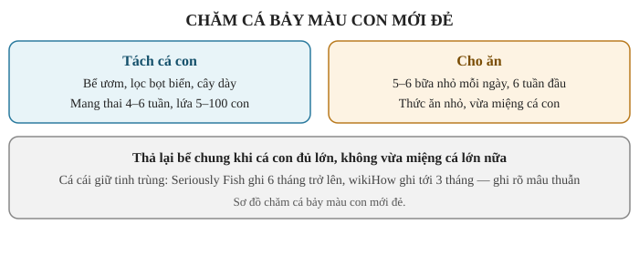

Cá bảy màu sinh sản: chăm cá con mới đẻ
Tác giả: Ruler
Cá bảy màu là loài cá đầu tiên sinh con trong bể của rất nhiều người mới, và thường là loài sinh con mà người nuôi không hề chuẩn bị trước. Bạn mua ba con cá bảy màu về bể cộng đồng, vài tuần sau thấy một con cá cái bụng to, rồi một buổi sáng bể có thêm mười mấy con cá con nhỏ như đầu tăm bơi lẩn vào cây. Vài tuần sau nữa, số cá con còn sống có thể ít đi rất nhiều, hoặc bể bỗng đông lên gấp đôi. Cả hai kết quả đều có cùng một nguyên nhân: cá bảy màu đẻ con đã bơi được, không đẻ trứng, và cá lớn trong bể — kể cả cá mẹ — sẽ ăn cá con nếu gặp.
Bài này viết riêng về cách chăm cá bảy màu con mới đẻ, từ lúc nhận biết cá cái sắp đẻ tới lúc cá con đủ lớn để thả lại bể chung. Bài không viết lại chu trình nitơ đầy đủ — chu trình đó đã được giải thích ở Cách xử lý nước mới trước khi thả cá, bài này chỉ nhắc ngắn và dẫn sang đó. Cách cho cá lớn ăn đầy đủ đã được viết ở Cho cá cảnh ăn đúng cách: bao nhiêu, mấy lần và lỗi thường gặp; bài này chỉ viết về cách cho cá con ăn, vì cá con cần thức ăn nhỏ hơn và ăn nhiều bữa hơn cá lớn rất nhiều. Bài cũng không chẩn đoán bệnh cho cá con và không kê thuốc: khi cá con có dấu hiệu lạ, bài chỉ hướng bạn tới việc đo nước, tách cá và hỏi người có kinh nghiệm hoặc bác sĩ thú y chuyên về cá.
1. Vì sao bể bảy màu bỗng đông lên — và vì sao bạn nên quyết định trước
Cá bảy màu, tên khoa học Poecilia reticulata, là cá đẻ con. Seriously Fish viết rõ về loài này: "Very easy. Livebearer" — sinh sản rất dễ, cá đẻ con, và "No real effort needs to be made to breed these fish", tức là gần như không cần cố gắng gì thì cá vẫn đẻ. Một con cá cái có thể đẻ từ 5 tới 100 con trong một lứa, theo hồ sơ của Seriously Fish, và thời gian mang thai kéo dài 4–6 tuần. Trang wikiHow về chăm cá bảy màu con ghi khoảng hẹp hơn: cá mang thai thường 22–40 ngày và mỗi lứa thường có 20–50 con. Hai khoảng này không mâu thuẫn nhau mà chồng lên nhau: khoảng 20–50 con nằm trong khoảng 5–100 con, và khoảng 22–40 ngày nằm trong khoảng 4–6 tuần. Bài này ghi cả hai khoảng, vì số con mỗi lứa thay đổi theo kích thước và tuổi của cá cái: cá cái lớn, đã đẻ vài lứa thường đẻ nhiều con hơn cá cái trẻ đẻ lứa đầu.
Có một điểm mà người mới hay bất ngờ nhất: cá cái có thể tiếp tục đẻ nhiều lứa sau khi cá đực đã bị tách ra. Seriously Fish viết tinh trùng thừa có thể được giữ trong ống dẫn trứng của cá cái trong thời gian dài, và cá cái vẫn có thể sinh con trong 6 tháng trở lên dù không còn cá đực trong bể. Trang wikiHow ghi khoảng ngắn hơn: cá cái giữ tinh trùng được tới 3 tháng. Hai nguồn không thống nhất về con số này, vì vậy bài này ghi rõ cả hai và khuyên bạn đừng dựa vào một con số duy nhất: nếu bạn tách cá đực ra hôm nay, hãy coi như cá cái vẫn có thể đẻ thêm vài lứa nữa trong nhiều tuần, thậm chí nhiều tháng sau đó.
Vì vậy quyết định đầu tiên không phải là mua đồ gì, mà là bạn muốn gì. Nếu bạn muốn nuôi cá con lớn lên, hãy chuẩn bị bể ươm và thức ăn cho cá con trước khi cá đẻ. Nếu bạn không muốn bể đông lên, Seriously Fish khuyên thẳng: chỉ nuôi cá một giới tính. 10 loại cá cảnh dễ nuôi nhất cho người mới của website này cũng đã gợi ý cách này: nuôi toàn cá đực nếu bạn không muốn bể có thêm cá con. Cách nuôi toàn cá đực cũng giúp cá cái không bị cá đực đuổi liên tục — 10 loại cá cảnh dễ nuôi nhất cho người mới đã viết tỉ lệ hai tới ba cá cái cho một cá đực, và hướng dẫn "Build Your Aquarium" dẫn khuyến nghị của OATA: ít nhất hai cá cái cho mỗi cá đực trong một nhóm nuôi chung.
Một quyết định khác cũng cần làm sớm: cá con lớn lên sẽ đi đâu. Hướng dẫn "Build Your Aquarium" viết thẳng rằng phần khó của việc sinh sản cá bảy màu thường không phải là làm cho cá đẻ, mà là chỗ ở cho cá con, và bạn nên quyết định trước mình giữ được bao nhiêu con, cá con sẽ lớn lên ở đâu và ai sẽ nhận chúng. Hướng dẫn này cũng viết rõ: đừng bao giờ thả cá thừa ra ao hồ hay sông suối tự nhiên. Cá bảy màu đã trở thành loài xâm lấn ở nhiều nơi, và Seriously Fish cũng ghi quần thể cá bảy màu hoang dã đã xuất hiện ở khoảng 50 nước ngoài vùng phân bố gốc của chúng.
2. Nhận biết cá cái sắp đẻ — và đừng ép cá đẻ
Dấu hiệu rõ nhất, theo Seriously Fish, là đốm thai (gravid spot): vùng sẫm màu sau vây hậu môn, ngay sau bụng cá cái. Khi cá cái sắp đẻ, đốm này sẫm hơn và bụng cá to, tròn hơn hẳn. Trang wikiHow mô tả thêm các dấu hiệu lúc chuyển dạ: cá cái trốn hoặc nằm gần sưởi, màu nhạt đi, bụng có dạng vuông, bơi tại chỗ hoặc run rẩy — đó thực ra là các cơn co. Cá cái cũng có thể bơi tới lui hoặc bơi lùi trong lúc chuyển dạ. Quá trình đẻ có thể kéo dài tới 6 giờ, theo wikiHow, nhưng cũng có thể ngắn hơn nhiều.
Tuy vậy, đốm thai không phải là lịch đẻ chính xác. Hướng dẫn "Build Your Aquarium" cảnh báo rõ: đốm thai không phải là chỉ báo ngày đẻ chính xác, và bạn không nên ép cá đẻ bằng cách tăng nhiệt đột ngột hay nắn bụng cá. Việc ép đẻ có thể làm cá cái stress nặng và cá con sinh ra yếu. Cách làm đúng là quan sát mỗi ngày, chuẩn bị sẵn bể ươm hoặc hộp đẻ, và chờ cá tự đẻ.
Một lưu ý khác từ cùng hướng dẫn: đừng vớt cá cái đang mang thai nặng lên xuống nhiều lần, và đừng nhốt cá cái lâu trong hộp đẻ nhỏ. Hộp đẻ chật, nước tù và cá bị nhốt lâu đều làm cá stress, mà cá stress thì dễ đẻ non hoặc đẻ xong yếu đi. Nếu bạn dùng hộp đẻ, chỉ đưa cá cái vào khi đã thấy rõ dấu hiệu chuyển dạ, và đưa cá mẹ ra ngay sau khi đẻ xong. Nếu bạn dùng bể ươm riêng, hãy chuyển cá cái sang đó sớm hơn một chút, khi bụng đã to tròn và đốm thai đã sẫm, để cá có thời gian quen bể mới trước khi đẻ.
3. Ba cách bảo vệ cá con: bể riêng, hộp đẻ, cây dày
Cá bảy màu con mới đẻ dài chỉ 7–10 mm, theo wikiHow, và bơi được ngay sau khi sinh. Kích thước đó vừa đúng miệng của hầu hết cá lớn trong bể, kể cả cá mẹ. Seriously Fish viết thẳng: "Adult fish will eat the young so it is better to remove them after the fry are born to ensure 100% survival" — cá lớn sẽ ăn cá con, vì vậy tốt nhất là tách cá con ra sau khi chúng được sinh ra để đảm bảo tỉ lệ sống cao nhất. Trang wikiHow nói giống vậy: cách duy nhất để chắc chắn cá con không bị ăn là đặt chúng trong bể riêng.
Có ba cách thường dùng, và mỗi cách có cái giá riêng:
Cách 1 — Bể ươm riêng: an toàn nhất. Bạn chuẩn bị một bể nhỏ đã chạy lọc xong, có sưởi, có lọc bọt biển và nhiều cây, rồi chuyển cá cái sắp đẻ sang đó hoặc chuyển cá con sang đó ngay sau khi đẻ. Ưu điểm là cá con được ăn riêng, nước được kiểm soát riêng, và bạn đếm được số cá con còn sống mỗi ngày. Nhược điểm là bạn cần thêm một bể, thêm sưởi và lọc, và phải chạy lọc cho bể ươm trước khi dùng — bể ươm cũng cần vi khuẩn lọc như bể chính, vì vậy đừng đổ nước máy mới vào bể ươm rồi thả cá con vào ngay. Cách chuẩn bị bể ươm được viết kỹ ở mục 4.
Cách 2 — Hộp đẻ hoặc lưới đẻ trong bể chính: tiện nhất, nhưng chỉ dùng ngắn hạn. Hộp đẻ là hộp nhựa nhỏ có khe để cá con lọt xuống ngăn dưới, tách khỏi cá mẹ; lưới đẻ là tấm lưới gắn ở góc bể. Trang wikiHow gợi ý đặt lưới đẻ ở góc bể, hoặc đặt cá mẹ vào một bể nhỏ riêng cho tới khi đẻ xong — ví dụ một bể khoảng 5 gallon Mỹ (19 lít). Lưu ý quan trọng của wikiHow: đừng đặt lưới đẻ gần đầu hút của lọc, vì cá con có thể bị hút vào lọc. Hạn chế của cách này là hộp đẻ chật và nước trong hộp ít được lưu thông; hướng dẫn "Build Your Aquarium" khuyên không nhốt cá cái lâu trong hộp đẻ nhỏ. Vì vậy chỉ dùng hộp đẻ trong vài giờ quanh lúc đẻ, rồi chuyển cá con ra bể ươm và trả cá mẹ về bể chính ngay sau khi đẻ xong.
Cách 3 — Cây dày trong bể chính: dễ nhất, nhưng cá con sẽ hao hụt. Seriously Fish viết bể nuôi cá bảy màu có nhiều cây, kèm cây nổi, là cách tốt nhất để cá con sống sót mà không cần tách riêng — nhưng đó là "cách tốt nhất" trong trường hợp bạn không tách, chứ không phải cách đảm bảo. Trang wikiHow viết rõ hơn: trồng cây thật hoặc cây giả ở nhiều chỗ trong bể, nhóm 2–3 cây gần nhau thành chỗ trốn, cá con sẽ trốn vào đó để tránh cá lớn; nhưng dùng cây chỉ giúp một phần cá con sống sót, còn một phần vẫn sẽ bị ăn. Cách này hợp với người nuôi cá bảy màu trong bể cộng đồng và chấp nhận chỉ một phần cá con sống sót, không hợp với người muốn giữ lại toàn bộ một lứa.
Bạn có thể kết hợp cả ba cách: bể chính trồng cây dày để cá con sinh ra bất ngờ vẫn có chỗ trốn, cộng với một bể ươm riêng để chuyển cá con sang ngay khi bạn phát hiện chúng. Đó là cách thực tế nhất cho người mới, vì cá bảy màu thường đẻ vào lúc bạn không để ý — buổi sáng sớm hoặc lúc bạn đi làm về.
4. Chuẩn bị bể ươm: nước cũ, lọc bọt biển, cây nổi

Bể ươm không cần đẹp, nhưng cần đúng ba thứ: nước đã chạy lọc xong, dòng nước nhẹ và nhiều chỗ trốn.
Nước. Bể ươm phải là bể đã chạy lọc xong, giống như bể chính trong Cách xử lý nước mới trước khi thả cá. Cách nhanh nhất là lấy nước từ bể chính đã ổn định sang bể ươm, kèm một ít vật liệu lọc hoặc một miếng bọt lọc từ bể chính để mang vi khuẩn sang. Dù làm cách nào, bạn vẫn phải đo nước trước khi thả cá con: hướng dẫn "Build Your Aquarium" viết amoniac và nitrit phải bằng 0, và cần theo dõi cả nitrat, nhiệt độ, pH, độ cứng GH và KH. Mức an toàn amoniac và nitrit là 0 mg/L, giống như RSPCA đã đặt ra cho bể chính trong Cách xử lý nước mới trước khi thả cá và Vì sao cá neon chết hàng loạt sau 1 tuần — cá con còn nhạy cảm hơn cá lớn, vì vậy đừng thả cá con vào bể ươm khi hai chỉ số này còn trên 0.
Nhiệt độ cho cá con, theo wikiHow, nên giữ trong khoảng 76–80°F, tức khoảng 24–27°C. Khoảng này nằm trong khoảng nước của cá bảy màu trưởng thành mà website này đang dùng: 22–28°C theo RSPCA, trong khi hồ sơ Seriously Fish ghi khoảng chịu đựng rộng hơn là 17–28°C. Bài này dùng khoảng 24–27°C làm mục tiêu cho bể ươm, vì đó là khoảng wikiHow khuyên riêng cho cá con, và nó nằm gọn trong khoảng 22–28°C của cá lớn. Độ pH cho bể ươm giữ như bể chính: mục tiêu 7,0–8,0, trong khoảng chịu đựng 7,0–8,5 của Seriously Fish. Đừng chỉnh pH cho bể ươm khác với bể chính, vì cá con sau này còn phải chuyển về bể chính.
Lọc. Lọc bọt biển chạy bằng khí là lựa chọn chuẩn cho bể ươm, vì hai lý do. Thứ nhất, bọt biển không hút cá con vào đầu lọc như lọc treo hay lọc thùng. Hướng dẫn "Build Your Aquarium" khuyên dùng lọc bọt biển đã chạy lâu hoặc một loại lọc khác có đầu hút an toàn cho cá con. Trang wikiHow cũng khuyên bọc một lớp lưới mỏng hoặc miếng bọt biển lên đầu hút của lọc, để cá con không bị hút vào. Thứ hai, bề mặt bọt biển có màng vi sinh mà cá con có thể rỉa ăn. Dòng nước trong bể ươm nên nhẹ: Seriously Fish viết cá bảy màu nói chung nên tránh dòng nước mạnh, và cá con càng không chịu được dòng mạnh.
Cây và chỗ trốn. Bể ươm nên có nhiều cây, đặc biệt là cây nổi và rêu Java, vì cá con thích trốn gần mặt nước trong rễ cây nổi. Seriously Fish khuyên bể cá bảy màu nên có cây trồng dày kèm cây nổi. Nếu bể ươm của bạn không có cây thật, hãy dùng cây giả mềm, nhóm 2–3 cây gần nhau như wikiHow gợi ý, và tránh đồ trang trí có cạnh sắc. Đáy bể ươm có thể để trơ hoặc trải một lớp cát mỏng; đáy trơ dễ hút cặn và dễ đếm cá con hơn, nhưng cá con sẽ ít chỗ trốn ở tầng đáy. Với người mới, đáy trơ kèm nhiều cây nổi là lựa chọn dễ quản lý nhất.
5. Cho cá con ăn: nhiều bữa nhỏ, thức ăn phải vừa miệng
Cá bảy màu con mới đẻ bơi được và ăn được ngay, nhưng miệng chúng chỉ vừa những mẩu thức ăn rất nhỏ. Hướng dẫn "Build Your Aquarium" khuyên dùng thức ăn cho cá con dạng bột mịn hoặc thức ăn viên nghiền thật nhỏ, kèm thức ăn sống nhỏ như ấu trùng artemia mới nở nếu bạn có nguồn nuôi đáng tin cậy, và cho ăn thành nhiều phần nhỏ, thường xuyên thay vì để thức ăn thừa phân hủy trong nước. Trang wikiHow đưa ra con số cụ thể hơn: cho cá con ăn mỗi 2–3 giờ trong 6 tuần đầu, tức khoảng 5–6 bữa mỗi ngày; sau 6 tuần đầu thì giảm xuống mỗi 4–5 giờ, tức 3–4 bữa mỗi ngày. Hướng dẫn "Build Your Aquarium" không đưa ra con số bữa mỗi ngày, vì vậy bài này ghi rõ con số 5–6 bữa là hướng dẫn của wikiHow, không phải con số mà mọi nguồn đều đồng ý.
Thức ăn đầu tiên nên gồm hai nhóm. Nhóm khô: cám cho cá con dạng bột, hoặc cám thường nghiền thành bụi mịn. Trang wikiHow khuyên nghiền cám bằng chày cối, hoặc đặt cám lên đĩa rồi nghiền bằng mặt sau của thìa, cho tới khi cám mịn như bụi, rồi rắc một ít vào bể và quan sát xem cá con có ăn được các mẩu đó không. Đừng cho cá con ăn mẩu cám to của cá lớn, vì chúng không ăn được. Nhóm tươi hoặc đông lạnh: ấu trùng artemia mới nở là thức ăn tốt nhất cho tăng trưởng theo nhiều hướng dẫn, và wikiHow khuyên cho ăn artemia 1–2 bữa mỗi ngày; trùn huyết khô nghiền nhỏ và daphnia cũng được wikiHow nhắc tới như thức ăn bổ sung. Khi cá con được khoảng 3–4 tuần tuổi, bạn có thể bắt đầu cho ăn thêm trùn nhỏ (microworm) và cám nghiền thô hơn một chút, rồi dần chuyển sang cám thường khi cá đủ lớn.
Lượng thức ăn mỗi bữa phải ít. Trang wikiHow khuyên chỉ cho lượng cá con ăn hết nhanh, và hướng dẫn "Build Your Aquarium" cũng nhấn mạnh cho ăn từng phần nhỏ, thường xuyên, thay vì để thức ăn thừa thối trong nước. Quy tắc 2–3 phút của Cho cá cảnh ăn đúng cách: bao nhiêu, mấy lần và lỗi thường gặp là quy tắc cho cá lớn; với cá con, bạn nên quan sát bụng cá: cá con ăn đủ sẽ có bụng hơi đầy và bơi khỏe, còn thức ăn thừa chìm xuống đáy sau vài phút là dấu hiệu bạn đã cho quá nhiều. Thức ăn thừa trong bể ươm phân hủy rất nhanh vì bể ươm nhỏ, vì vậy vớt thức ăn thừa và hút cặn đáy nhẹ nhàng sau mỗi bữa ăn lớn là việc nên làm hằng ngày.
6. Nước và vệ sinh bể ươm: thay ít, thay thường xuyên
Bể ươm nhỏ nên nước bẩn nhanh hơn bể lớn. Cá con ăn nhiều bữa, thải nhiều, và thức ăn thừa cũng nhiều hơn theo tỉ lệ thể tích. Hướng dẫn "Build Your Aquarium" khuyên hút cặn cẩn thận, bảo vệ đầu hút lọc và đo nước thường xuyên hơn khi số lượng cá tăng lên. Trang wikiHow khuyên vệ sinh bể cá con hằng tuần: vớt cá con ra bằng cốc hoặc vợt, đổ nước cũ đi, lau tảo và cặn bám trên thành bể, rồi đổ nước sạch đã khử clo vào, chờ nhiệt kế báo đúng nhiệt độ rồi mới thả cá con lại. Nếu không vệ sinh toàn bộ được mỗi tuần, wikiHow khuyên ít nhất thay 1/4 lượng nước mỗi tuần bằng nước sạch đã khử clo.
Bài này khuyên bạn làm theo cách nhẹ nhàng hơn cách của wikiHow ở một điểm: đừng vớt toàn bộ cá con ra và thay toàn bộ nước trong một lần, vì việc đó làm cá con stress và làm mất vi khuẩn lọc trong bể ươm. Cách tốt hơn, theo đúng nguyên tắc thay nước của Thay nước cho bể cá đúng cách: bao nhiêu, bao lâu và lỗi thường gặp, là thay một phần nhỏ nước mỗi 2–3 ngày, dùng ống hút nhỏ để hút cặn đáy mà không hút theo cá con, và bù nước mới đã khử clo, cùng nhiệt độ với nước bể. Khi cá con đông lên, hãy tăng tần suất đo nước thay vì tăng lượng nước thay mỗi lần: đo amoniac và nitrit hai ngày một lần trong những tuần đầu, và thay nước ngay khi một trong hai chỉ số trên 0.
Một điều không nên làm: đừng tự ý cho thuốc kháng sinh hay thuốc trị ký sinh trùng vào bể ươm khi chưa có chẩn đoán rõ ràng. Hướng dẫn "Build Your Aquarium" viết rõ: tỉ lệ sống kém cần được điều tra từ nước, dinh dưỡng và sức khỏe, và đừng dùng kháng sinh hay thuốc trị ký sinh trùng theo thói quen khi chưa có lý do chẩn đoán. Với cá con, thuốc sai liều còn nguy hiểm hơn với cá lớn, vì vậy khi cá con có dấu hiệu lạ — cong vẹo cột sống, lở loét, thối vây, thối đuôi — cách đúng theo wikiHow là tách con bị bệnh ra bể riêng để theo dõi, chứ không phải đổ thuốc vào cả bể ươm.
7. Cá con lớn lên: khi nào biết trống mái, khi nào thả lại bể chung
Cá bảy màu con không có màu ngay. Trang wikiHow viết cá con sẽ chưa có màu cho tới khoảng 2–3 tuần tuổi, sau đó mới bắt đầu lên màu. Cá sẽ tiếp tục lớn cho tới khoảng 6 tháng tuổi, lúc đó được coi là trưởng thành, dù sau đó vẫn có thể lớn thêm một chút. Bạn có thể phân biệt trống mái khi cá được khoảng 1 tháng tuổi: cá đực có vây dài như que ở bụng dưới, gọi là vây sinh dục (gonopodium); cá cái có đốm thai sẫm màu ở bụng dưới. Tới khoảng 6–8 tuần tuổi, wikiHow khuyên tách cá đực và cá cái ra riêng nếu bạn không muốn chúng sinh sản tiếp. Cá cái thường bắt đầu sinh sản khi được 2–3 tháng tuổi, vì vậy việc tách giới tính sớm là cách duy nhất để kiểm soát dân số nếu bạn nuôi cả hai giới trong cùng một hệ thống bể.
Thời điểm thả cá con lại bể chung không tính bằng tuần tuổi mà tính bằng kích thước. Trang wikiHow viết rõ: chỉ thả cá con lại bể chính khi chúng đã lớn hơn miệng của cá lớn trong bể, nếu không cá lớn vẫn có thể ăn chúng. Với bể cộng đồng có cá bảy màu lớn, cá mún hay cá neon, cá con thường đủ lớn sau khoảng 6–8 tuần, nhưng bạn nên đo bằng mắt thay vì đếm tuần: đặt cá con cạnh cá lớn nhất trong bể và so sánh — nếu cá con vẫn lọt vừa miệng cá lớn thì chưa thả. Trước khi thả, hãy cho cá con ăn no, thả vào buổi tối khi đèn đã tắt hoặc sắp tắt, và quan sát trong 30 phút đầu xem cá lớn có đuổi cá con không. Nếu cá lớn đuổi rát, hãy vớt cá con lại bể ươm và thử lại sau một tuần.
Khi cá con đã về bể chung, chúng ăn cùng thức ăn với cá lớn, theo quy tắc 2–3 phút của Cho cá cảnh ăn đúng cách: bao nhiêu, mấy lần và lỗi thường gặp. Lúc này bạn cũng nên bắt đầu tách cá đực và cá cái nếu chưa tách, vì cá cái 2–3 tháng tuổi đã có thể mang thai lứa đầu, và một bể cộng đồng có cả trống mái sẽ lại có cá con trong vòng một tháng nữa.
8. Lỗi thường gặp khi chăm cá bảy màu con
| Lỗi | Vì sao hại cá con | Cách làm đúng |
|---|---|---|
| Để cá con trong bể chính không có chỗ trốn | Cá lớn ăn hết cá con trong ngày đầu | Chuẩn bị bể ươm riêng, hoặc trồng cây dày thành từng nhóm 2–3 cây |
| Nhốt cá cái lâu trong hộp đẻ nhỏ | Cá cái stress, đẻ non, đẻ xong yếu đi | Chỉ đưa cá cái vào hộp đẻ khi đã thấy dấu hiệu chuyển dạ, đưa ra ngay sau khi đẻ xong |
| Ép cá đẻ bằng cách tăng nhiệt đột ngột hay nắn bụng | Cá cái stress nặng, cá con sinh ra yếu | Chờ cá tự đẻ; đốm thai không phải lịch đẻ chính xác |
| Cho cá con ăn cám to của cá lớn | Cá con không ăn được, thức ăn thừa làm bẩn nước | Nghiền cám thành bụi mịn, hoặc dùng thức ăn bột cho cá con và ấu trùng artemia mới nở |
| Cho ăn một bữa lớn mỗi ngày | Cá con bụng nhỏ, ăn không hết, thức ăn thừa thối trong bể ươm nhỏ | Cho nhiều bữa nhỏ trong ngày; wikiHow khuyên 5–6 bữa/ngày trong 6 tuần đầu |
| Thay toàn bộ nước bể ươm trong một lần | Mất vi khuẩn lọc, cá con sốc nước | Thay một phần nhỏ nước mỗi 2–3 ngày, hút cặn nhẹ, bù nước đã khử clo cùng nhiệt độ |
| Đổ thuốc kháng sinh vào bể ươm khi chưa biết bệnh gì | Thuốc sai liều nguy hiểm hơn với cá con | Tách cá có dấu hiệu lạ ra riêng, đo nước trước, hỏi người có kinh nghiệm |
| Thả cá thừa ra ao hồ tự nhiên | Cá bảy màu là loài xâm lấn ở nhiều nơi | Tìm cửa hàng nhận lại, tặng người nuôi khác, hoặc nuôi riêng một giới tính từ đầu |
| Không tách trống mái khi cá được 6–8 tuần tuổi | Cá cái 2–3 tháng tuổi đã sinh sản, bể lại đông lên | Tách trống mái khi phân biệt được, khoảng 6–8 tuần tuổi theo wikiHow |
Checklist trước khi cá cái đẻ
- Bể ươm đã chạy lọc xong, đo amoniac và nitrit đều bằng 0, nhiệt độ 24–27°C, pH 7,0–8,0.
- Lọc bọt biển đã chạy, đầu hút lọc đã bọc bọt biển hoặc lưới mịn.
- Cây nổi và rêu Java đã có trong bể ươm; đồ trang trí không có cạnh sắc.
- Thức ăn cho cá con đã mua sẵn: thức ăn bột cho cá con, cám nghiền mịn, ấu trùng artemia mới nở hoặc đông lạnh.
- Ống hút cặn nhỏ, cốc nhựa để vớt cá con, vợt mắt nhỏ đã chuẩn bị sẵn.
- Đã quyết định cá con lớn lên sẽ đi đâu: giữ lại bao nhiêu con, tặng hay bán cho ai, cửa hàng nào nhận lại.
- Đã ghi lại ngày cá cái bắt đầu mang thai rõ rệt, để ước lượng lứa đẻ trong khoảng 4–6 tuần theo Seriously Fish (22–40 ngày theo wikiHow).
Kết luận
Chăm cá bảy màu con không khó vì cá con cần kỹ thuật cao, mà khó vì cá con cần bạn chuẩn bị trước. Cá bảy màu đẻ rất dễ — Seriously Fish viết gần như không cần cố gắng gì thì cá vẫn đẻ — nhưng cá con chỉ sống sót khi bạn đã có bể ươm chạy lọc xong, lọc bọt biển an toàn, cây dày để trốn và thức ăn vừa miệng. Quyết định quan trọng nhất vẫn là quyết định trước khi cá đẻ: bạn muốn giữ cá con hay không. Nếu muốn giữ, hãy chuẩn bị bể ươm ngay khi thấy cá cái mang thai. Nếu không muốn bể đông lên, hãy nuôi toàn cá đực ngay từ đầu, và nhớ rằng cá cái đã từng ở chung với cá đực vẫn có thể đẻ thêm vài lứa nữa vì tinh trùng được giữ lại trong cơ thể cá cái. Khi cá con đã đủ lớn để thả lại bể chung, bạn sẽ có một đàn cá bảy màu do chính mình nuôi lớn từ lúc chỉ dài 7–10 mm — và đó là phần thưởng lớn nhất của việc nuôi cá đẻ con.
Nguồn tham khảo
- Seriously Fish, "Poecilia reticulata (Guppy)" — cá bảy màu dài 60 mm, mặt bể 45×30 cm (khoảng 41 lít), nhiệt độ 17–28°C, pH 7,0–8,5, độ cứng 8–30 dGH, cá nước cứng, bể trồng cây kèm cây nổi, tránh dòng nước mạnh, nuôi nhiều cá cái cho một cá đực, mang thai 4–6 tuần, mỗi lứa 5–100 con, tinh trùng giữ được 6 tháng trở lên, cá lớn ăn cá con nên tách cá con ra sau khi đẻ, bể trồng cây dày là cách tốt nhất để cá con sống sót (truy cập 23/11/2026): https://www.seriouslyfish.com/species/poecilia-reticulata
- Build Your Aquarium, "How to Breed Guppies: The Complete Step-by-Step Guide" — bể trồng cây khoảng 20 gallon cho nhóm sinh sản nhỏ, lọc bọt biển đã chạy lâu hoặc lọc có đầu hút an toàn cho cá con, amoniac và nitrit phải bằng 0, OATA khuyên ít nhất hai cá cái cho mỗi cá đực, cá cái giữ tinh trùng và đẻ thêm lứa sau khi tách cá đực, cá lớn có thể ăn cá con, không ép đẻ bằng cách tăng nhiệt đột ngột hay nắn bụng, thức ăn bột mịn cho cá con và ấu trùng artemia mới nở, cho ăn từng phần nhỏ thường xuyên, không dùng kháng sinh theo thói quen khi chưa có chẩn đoán, không thả cá thừa ra nước tự nhiên (truy cập 23/11/2026): https://www.buildyouraquarium.com/breeding-guppies/
- wikiHow, "How to Care for Baby Guppies" — cá mang thai thường 22–40 ngày, cá con mới đẻ dài 7–10 mm, mỗi lứa thường 20–50 con, đẻ kéo dài tới 6 giờ, bể nhỏ khoảng 5 gallon Mỹ (19 lít) cho cá mẹ đẻ, đưa cá mẹ ra ngay sau khi đẻ xong, nhóm 2–3 cây gần nhau làm chỗ trốn, chỉ bể riêng mới đảm bảo cá con không bị ăn, nhiệt độ 76–80°F, bọc bọt biển lên đầu hút lọc, thay ít nhất 1/4 lượng nước mỗi tuần, không bật đèn quá 14 giờ/ngày, cho ăn 5–6 bữa/ngày trong 6 tuần đầu rồi giảm xuống 3–4 bữa/ngày, artemia 1–2 bữa/ngày, cá con lên màu lúc 2–3 tuần tuổi, phân biệt trống mái lúc khoảng 1 tháng tuổi, tách trống mái lúc 6–8 tuần tuổi, cá cái sinh sản lúc 2–3 tháng tuổi, tinh trùng giữ được tới 3 tháng (truy cập 23/11/2026): https://www.wikihow.pet/Care-for-Baby-Guppies
- RSPCA, "Choosing an Aquarium for Pet Fish" — amoniac và nitrit an toàn ở 0 mg/L, cá bảy màu chịu được 22–28°C, đèn 8–10 giờ mỗi ngày (đã mở trực tiếp ở 10 loại cá cảnh dễ nuôi nhất cho người mới và cách xử lý nước mới trước khi thả cá ngày 23/11/2026): https://science.rspca.org.uk/en/web/rspca/adviceandwelfare/pets/fish/environment